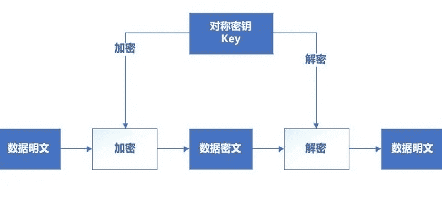
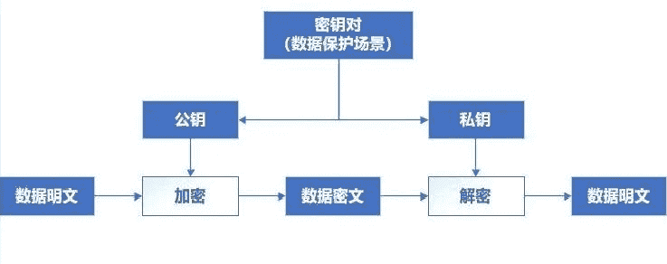
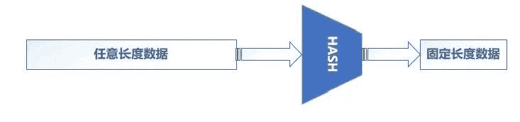
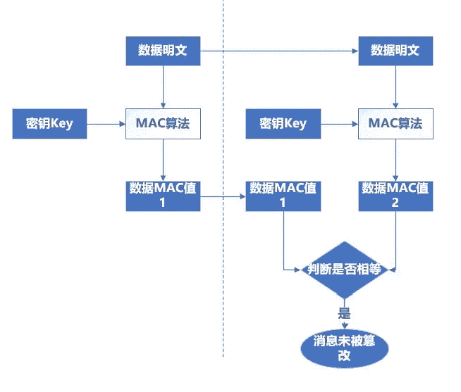
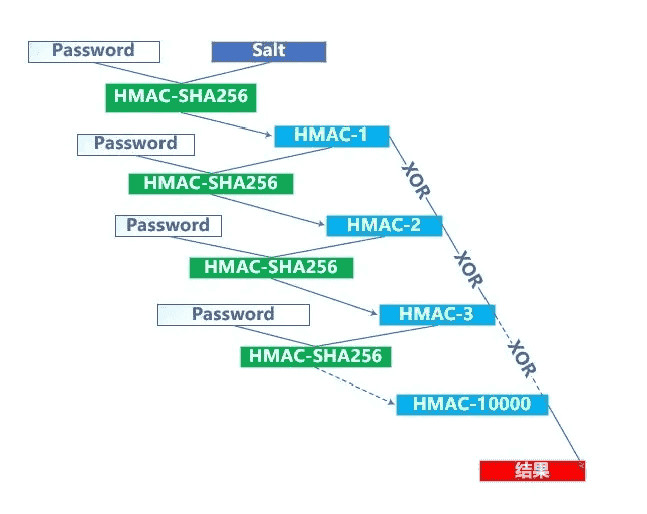

常用加密算法安全性分析
常用加密算法安全性分析
密码学算法分类
根据加密算法的加解密特性，加密算法可分为可逆加密算法和不可逆加密算法，其中可逆加密算法既可以加密也可以解密，但是不可逆加密算法只有加密功能（单向加密）。
对两大类继续分类，可逆加密算法又可以分为对称加密算法和非对称加密算法，不可逆加算法可分为HASH算法、消息验证码和密钥派生算法等，可参考下表：
| 大类 | 算法小类 | 算法示例 | 不安全的算法 | 推荐使用 |
|---|---|---|---|---|
| 可逆加密算法 | 对称加密算法 | DES、3DES、DESX、Blowfish、SKIPJACK、RC2、RC4、AES、Chacha20等 | DES、DES、DESX、Blowfish、SKIPJACK、RC2、RC4、AES-ECB、AES-CBC？ | AES-GCM |
| 可逆加密算法 | 非对称加密算法 | RSA、ECC、DSA、ECDSA、ECDH、DH等 | DSA、RSA-2048以下 | ECC（如 Curve25519、Ed25519 和 NIST 推荐曲线） |
| 不可逆加密算法 | HASH算法 | MD5、SHA1、SHA0、MD2、MD4、RIPEMD、Panama、HAVAL、Tiger、SipHASH、SHA2、SHA3等 | MD5、SHA1、SHA0、MD2、MD4、Tiger、RIPEMD、Panama、HAVAL、SipHASH | SHA256 |
| 不可逆加密算法 | 消息验证码 | HMAC、CMAC等 | ||
| 不可逆加密算法 | 密钥派生算法 | PBKDF2、Scrypt、Bcrypt、Argon2等 |
对称加密算法
在对称加密算法中，通信双方加密和解密使用相同密钥：
- 数据发送方使密钥结合特定加密算法完成对数据的加密操作。
- 数据接收方拿到数据密文后使用相同密钥，并结合特定对应解密算法完成对数据密文解密操作。
对称加密算法计算速度快，但由于通信双方使用相同密钥，密钥保存和协商过程存在一定的安全风险。

安全禁忌：
（1）请勿使用已经被业界证实不安全或未被证实算法安全性的的加密算法，包括但不限于DES、DESX、Blowfish、SKIPJACK、RC2、RC4、TEA；
（2）AES（Advanced Encryption Standard）加密算法请勿使用ECB模式（如果没有指定默认就是ECB）；
（3）密钥必须使用安全随机数生成，手动设置的密钥可能存在人为习惯因素使得密钥容易被猜测到；
（4）禁止密钥硬编码或明文存储，对称加密算法的安全性取决于密钥的安全性，如果密钥泄露直接导致敏感数据保护失效。
脆弱算法：
为什么不推荐那些算法：
- DES ：使用 56 位密钥，这在现代计算能力下太短，容易被暴力破解。现代硬件可以在相对短的时间内尝试所有可能的密钥。
- DESX：对 DES 的扩展，通过在输入和输出上添加额外的异或操作来增加复杂性，但它仍然基于 DES 的核心结构，仍然具有同样的密钥长度限制，因此无法提供足够的安全性。
- Blowfish：虽然 Blowfish 没有已知的致命安全漏洞，但它设计较早，密钥长度和块大小的选择存在一定的限制。相较于现代加密标准（如 AES），它的使用较少，且没有经过同等程度的安全审查。
- RC2：基于分组的加密算法，设计用于替代 DES，密钥长度可变（从 1 到 128 位）。但其设计较老，存在已知的攻击方法，且其安全性在现代标准下不被认为足够。
- RC4：一种流加密算法，普遍应用于早期的 TLS 和 WEP 协议中。然而，RC4 存在多种已知的漏洞和攻击方法，例如密钥流偏移攻击，导致其在许多应用中被弃用。
- AES-ECB模式：
- 模式的可预测性：每个明文块被独立加密成密文块。因此，相同的明文块会始终被加密成相同的密文块。这种行为导致密文中保留了明文的模式，攻击者可以通过观察密文块的重复性来推断明文的一些信息。
- 缺乏数据扩散：ECB 模式没有任何数据扩散的特性。每个明文块独立加密，没有任何链接或依赖于其他块。这意味着一个明文块的内容不会影响其他块的密文，导致模式泄露。
推荐算法：
- 首推AES256，ECB模式除外。
- chacha20，由丹尼尔·伯恩斯设计的，安全性经过了广泛的分析，没有已知的致命漏洞。
- ChaCha20 在软件实现上非常高效，特别是在不支持硬件加速的设备上（如某些移动设备和嵌入式系统）表现优异
- Twofish ，是 AES 竞赛的一个候选算法，虽然最终没有被选为标准，但它仍然被认为是非常安全的，没有已知的致命漏洞。
非对称加密算法
非对称加密算法密钥成对出现，密钥根据用途不同可分为公钥和私钥，使用公钥加密的数据只有使用私钥能够解密（例如，传输加密场景），使用私钥加密的数据只有公钥可以解密（例如，数字签名场景）。
由于其算法设计的较为复杂，加解密速度较慢。安全取决于算法本身和密钥。适用于传输加密、数字签名、密钥协商等场景。

安全禁忌：
（1）RSA（Rivest–Shamir–Adleman）算法密钥长度建议2048bit以上，密钥长度为1024bit以下已经被证实其不安全性；
（2）请勿将私钥硬编码或明文存储，非对称加密算法私钥泄露直接导致数据安全性的没法保证，建议加密保存。
脆弱算法：
DSA (Digital Signature Algorithm)
安全问题:
- 参数选择问题: 不正确的参数选择可能导致签名被伪造。
- 随机数问题: 使用不当的随机数生成器可能导致私钥泄露。
替代方案:
- 使用 ECDSA（椭圆曲线数字签名算法）或 EdDSA（Edwards-curve Digital Signature Algorithm）代替 DSA。
RSA 密钥长度不足
安全问题:
- 低密钥长度: 使用低于 2048 位密钥长度的 RSA 被认为是不安全的，易受到因子分解攻击。
替代方案:
- 使用至少 2048 位或更高的密钥长度。
- 结合现代填充方案，如 OAEP（Optimal Asymmetric Encryption Padding）和 PSS（Probabilistic Signature Scheme）。
不安全的 ECC 曲线
安全问题:
- 不推荐的曲线: 某些椭圆曲线（如 secp192k1）不再被推荐，因其安全性未经过充分验证。
替代方案:
- 使用 NIST 推荐的曲线（如 P-256, P-384）或现代曲线（如 Curve25519 和 Ed25519）。
HASH算法
HASH算法特点是将任意长度的数据映射到有限长度的域上，具有不可逆、变化敏感、冲突概率低、执行效率高等特点，适用于完整性校验、数字签名等场景

安全性建议：
（1）请勿使用已经被业界证实不安全或未被证实算法安全性的的HASH算法，包括但不限于MD5、SHA1、SHA0、MD2、MD4、RIPEMD、Panama、HAVAL、Tiger、SipHASH等，弱HASH函数可通过彩虹表攻击、社会工程学等手段存在被破解的可能；
（2）推荐使用更安全的SHA2、SHA3等。
不安全或未被证明安全的哈希算法包括但不限于：
- MD5 (Message-Digest Algorithm 5): 易受碰撞攻击和预成像攻击。
- SHA1 (Secure Hash Algorithm 1): 易受碰撞攻击，已被证明不再安全。
- SHA0: 设计缺陷严重，安全性甚至比 SHA1 更差。
- MD2, MD4: 老旧且设计存在缺陷，容易被碰撞攻击。
- RIPEMD: 特别是 RIPEMD-128 已被证明不安全，相对更安全的 RIPEMD-160 也不如 SHA-2 系列。
- Panama: 缺乏广泛的安全审查和验证。
- HAVAL: 尽管设计复杂，但未经过充分的安全验证。
- Tiger: 虽然尚无已知的严重漏洞，但未被广泛接受和使用。
- SipHASH: 主要用于消息认证，而非通用哈希，不适合作为密码学哈希函数。
推荐的安全哈希算法包括：
- SHA-2 系列 (SHA-224, SHA-256, SHA-384, SHA-512, SHA-512/224, SHA-512/256):
- 安全性: SHA-2 系列算法经过广泛的安全审查，没有已知的严重漏洞。
- 应用: 广泛应用于数字签名、证书、加密货币等领域。
SHA-3 系列 (SHA3-224, SHA3-256, SHA3-384, SHA3-512, SHAKE128, SHAKE256):
- 安全性: SHA-3 是通过 NIST 公开竞赛选择的新一代哈希标准，设计上与 SHA-2 不同，提供了额外的安全保障。
- 应用: 适用于对 SHA-2 安全性有额外需求的应用场景。
消息验证码
一种基于对称密码体制的认证方案，从算法特点来看可以理解为带密钥的HASH函数，安全性受到HASH算法和密钥的两层保护，安全性比HASH函数高。适用于在不安全的通信环境中保护消息的完整性和消息源的认证。

安全性建议：
（1）密钥建议使用安全随机数生成，手动设置的密钥可能存在人为习惯因素使得密钥破译难度降低；
（2）请勿将密钥硬编码或明文存储，加密算法的安全性取决于密钥的安全性；
（3）HMAC推荐优先使用更安全的HASH函数。
密钥派生算法
简称KDF，用于将一个密码/密钥变换成另一个(或多个)密码/密钥的算法，适用于派生密钥、口令保存等场景。

安全性建议：
（1）盐值至少8字节，并使用安全随机数生成；
（2）建议迭代次数10000次，性能受限场景可迭代1000次；
（3）输入口令长度需要大于等于对应HASH输出长度，例如采用SHA256，密钥长度需要至少256bit。